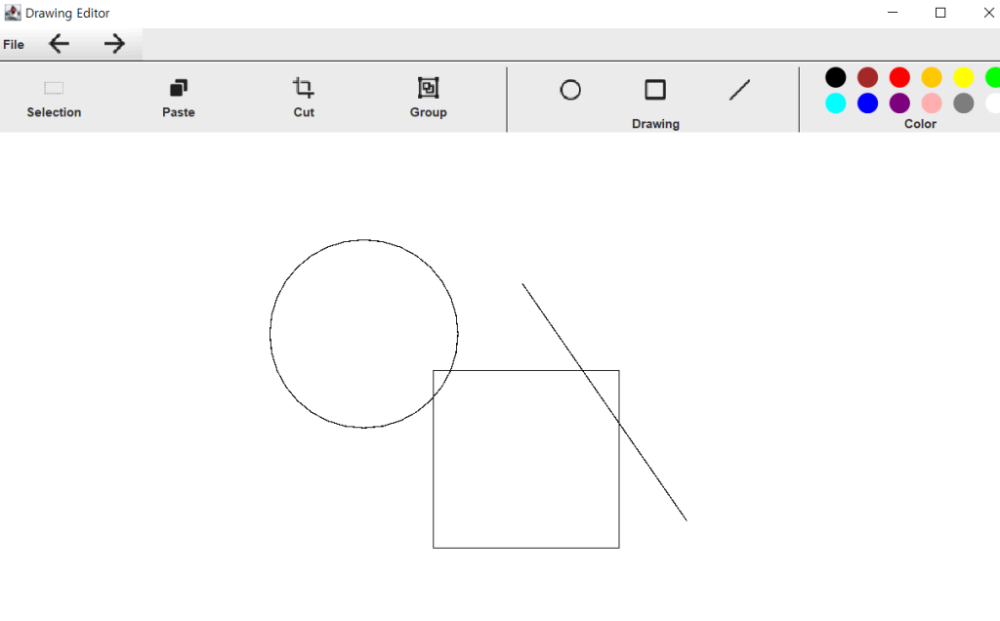
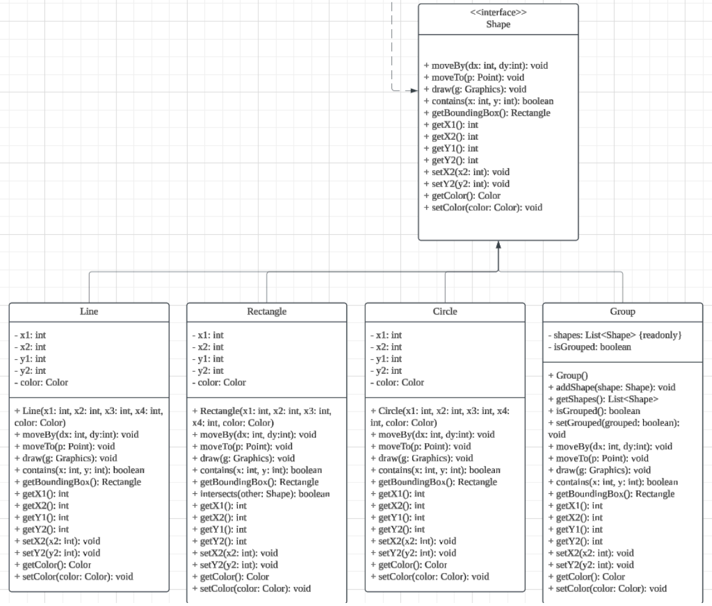

Projects
ROPME Project
2024.12
Hacking wargame team project in 'Computer System' lecture. Among the many vulnerabilities in the c language, learned about buffer overflow and used assembly language and memory addresses to cover the return address and run remote shell, basic system hacking.
Vulnerable Code : "read(0, overflowme, 0x200);"
Stack: Debug, Reversing, System Hacking Basic
- Offset(return address)
- 'libc' library address(dynamically allocated)
- Gadget chains
- Writing payload
- Exploit

- link: Github Link
Smart Refrigerator Design with Machine Learning(CV, NLP)
2025.02
Machine learning project in Northumbria University, A mini project using CV and NLP was carried out in ms cloud environment. Based on the image analysis function installed in the refrigerator, Our team devised a system for recommending a recipe after natural language processing. Image analysis was performed on ham, cheese, bread, eggs, and onions, and the results were as follows


- link: PPT Google Drive
Drawing Editor
2024.12
Drawing editor project in Data Structure class. This project was carried out in two stages: basic UI creation and implementation. The basic UI was composed through Figma and visualized with a UML diagram. In the implementation stage, the basic structure of the drawing editor, such as color, move, cut, undo, and redo was implemented with manual.
 - link: Github Link
Korean Won Detection
2024.12
Korean Won Detection project in Open Source Software class. This project was carried out in two stages: Step 2: Investigating, conceiving multiple open sources and implementing. Using the OpenCV library, the bill was implemented to determine the real or fake according to the similarity when it was brought to the screen. In addition, several functions were added to the GitHub page to activate the function as a kind of community.
- link: Github Link